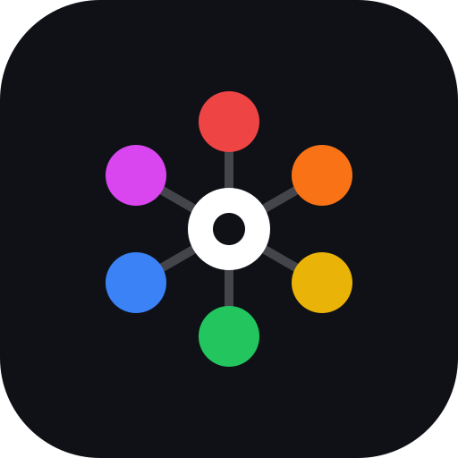
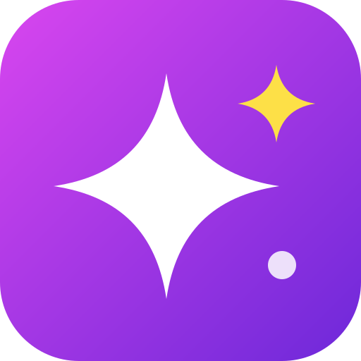

Der Markenname als weiche Buchstaben, der i-Punkt ist der gelbe „Touch"-Funke. Sonnenuntergangs-Verlauf von Magenta zu Orange. Sehr klar, auch winzig lesbar.
Eine Chat-Blase mit einer Kameralinse darin: Chats und Snaps in einem Zeichen. Dunkler Hintergrund, leuchtende Blase.
Zwei abgerundete Finger, zwischen denen der Funke überspringt – wörtlich „in touch". Frisches Blau-Violett, hebt sich von typischen Messenger-Grüntönen ab.

Sechs bunte Punkte um dich in der Mitte, passend zu Circles und dem Regenbogen-Verlauf in der App. Dunkel und bunt, sofort als „Gruppe" erkennbar.

Ein großer weißer Funke mit kleinem gelbem Begleiter: der gemeinsame Moment. Ruhig, modern, bleibt nah an der heutigen Magenta-Farbe.